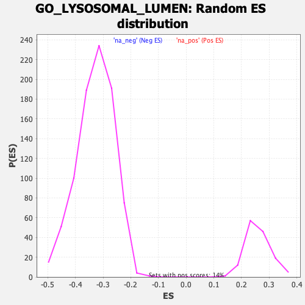

| | | Dataset | DE_genes2 |
| Phenotype | NoPhenotypeAvailable |
| Upregulated in class | na_pos |
| GeneSet | GO_LYSOSOMAL_LUMEN |
| Enrichment Score (ES) | 0.5771647 |
| Normalized Enrichment Score (NES) | 2.210813 |
| Nominal p-value | 0.0 |
| FDR q-value | 0.0018285813 |
| FWER p-Value | 0.01 |
Table: GSEA Results Summary
 Fig 1: Enrichment plot: GO_LYSOSOMAL_LUMEN
Fig 1: Enrichment plot: GO_LYSOSOMAL_LUMEN
Profile of the Running ES Score & Positions of GeneSet Members on the Rank Ordered List
| PROBE | GENE SYMBOL | GENE_TITLE | RANK IN GENE LIST | RANK METRIC SCORE | RUNNING ES | CORE ENRICHMENT | | 1 | GPC6 | | | 111 | 5.859 | 0.0381 | Yes |
| 2 | GLB1 | | | 167 | 5.282 | 0.0752 | Yes |
| 3 | CTSB | | | 269 | 4.585 | 0.1042 | Yes |
| 4 | NAGLU | | | 322 | 4.327 | 0.1342 | Yes |
| 5 | PLBD2 | | | 351 | 4.217 | 0.1648 | Yes |
| 6 | HSPG2 | | | 392 | 4.031 | 0.1932 | Yes |
| 7 | ACP2 | | | 408 | 3.950 | 0.2226 | Yes |
| 8 | GBA | | | 443 | 3.854 | 0.2500 | Yes |
| 9 | CTSA | | | 503 | 3.703 | 0.2748 | Yes |
| 10 | GAA | | | 648 | 3.309 | 0.2914 | Yes |
| 11 | ATP13A2 | | | 672 | 3.266 | 0.3150 | Yes |
| 12 | MAN2B1 | | | 736 | 3.134 | 0.3352 | Yes |
| 13 | SMPD1 | | | 791 | 3.059 | 0.3553 | Yes |
| 14 | GUSB | | | 803 | 3.045 | 0.3780 | Yes |
| 15 | LGMN | | | 818 | 3.014 | 0.4002 | Yes |
| 16 | HEXA | | | 858 | 2.926 | 0.4202 | Yes |
| 17 | VCAN | | | 1131 | 2.567 | 0.4234 | Yes |
| 18 | ARSA | | | 1132 | 2.566 | 0.4430 | Yes |
| 19 | CHID1 | | | 1176 | 2.498 | 0.4595 | Yes |
| 20 | MAN2B2 | | | 1402 | 2.268 | 0.4632 | Yes |
| 21 | GALNS | | | 1451 | 2.222 | 0.4773 | Yes |
| 22 | SGSH | | | 1528 | 2.154 | 0.4892 | Yes |
| 23 | CTSS | | | 1570 | 2.115 | 0.5029 | Yes |
| 24 | GNS | | | 1670 | 2.020 | 0.5124 | Yes |
| 25 | AGRN | | | 1788 | 1.925 | 0.5200 | Yes |
| 26 | HYAL1 | | | 1789 | 1.925 | 0.5347 | Yes |
| 27 | SDC4 | | | 1965 | 1.784 | 0.5378 | Yes |
| 28 | NPC2 | | | 1985 | 1.766 | 0.5501 | Yes |
| 29 | IFI30 | | | 1993 | 1.760 | 0.5632 | Yes |
| 30 | TCN2 | | | 2304 | 1.558 | 0.5563 | Yes |
| 31 | IDUA | | | 2527 | 1.429 | 0.5537 | Yes |
| 32 | CSPG4 | | | 2738 | 1.312 | 0.5510 | Yes |
| 33 | GPC4 | | | 2817 | 1.278 | 0.5561 | Yes |
| 34 | SDC3 | | | 2958 | 1.213 | 0.5568 | Yes |
| 35 | CTSD | | | 2961 | 1.212 | 0.5660 | Yes |
| 36 | SDC1 | | | 2989 | 1.200 | 0.5736 | Yes |
| 37 | TPP1 | | | 3300 | 1.075 | 0.5629 | Yes |
| 38 | CD74 | | | 3387 | 1.043 | 0.5657 | Yes |
| 39 | PSAP | | | 3486 | 1.010 | 0.5675 | Yes |
| 40 | FUCA1 | | | 3517 | 0.999 | 0.5733 | Yes |
| 41 | GPC1 | | | 3578 | 0.979 | 0.5772 | Yes |
| 42 | GM2A | | | 3834 | 0.885 | 0.5684 | No |
| 43 | CTSF | | | 3923 | 0.861 | 0.5697 | No |
| 44 | SDC2 | | | 4547 | 0.678 | 0.5370 | No |
| 45 | SCARB2 | | | 4635 | 0.654 | 0.5367 | No |
| 46 | RNASET2 | | | 5293 | 0.494 | 0.5006 | No |
| 47 | GPC2 | | | 5364 | 0.476 | 0.5000 | No |
| 48 | ASAH1 | | | 5435 | 0.463 | 0.4993 | No |
| 49 | NEU4 | | | 6223 | 0.298 | 0.4537 | No |
| 50 | MANBA | | | 6267 | 0.292 | 0.4534 | No |
| 51 | LAMP2 | | | 6343 | 0.277 | 0.4509 | No |
| 52 | ARSB | | | 6395 | 0.264 | 0.4498 | No |
| 53 | LIPA | | | 6735 | 0.195 | 0.4307 | No |
| 54 | BGN | | | 6776 | 0.189 | 0.4298 | No |
| 55 | FMOD | | | 7002 | 0.155 | 0.4173 | No |
| 56 | NSG1 | | | 7007 | 0.154 | 0.4182 | No |
| 57 | IDS | | | 7418 | 0.079 | 0.3939 | No |
| 58 | NAAA | | | 8516 | -0.096 | 0.3280 | No |
| 59 | GPC3 | | | 8627 | -0.115 | 0.3222 | No |
| 60 | GYG1 | | | 8684 | -0.127 | 0.3197 | No |
| 61 | SERPINB13 | | | 8783 | -0.150 | 0.3149 | No |
| 62 | CUBN | | | 8840 | -0.159 | 0.3127 | No |
| 63 | HSPA8 | | | 8959 | -0.184 | 0.3070 | No |
| 64 | CTSK | | | 9124 | -0.220 | 0.2987 | No |
| 65 | HEXB | | | 11052 | -0.824 | 0.1879 | No |
| 66 | GLA | | | 11103 | -0.842 | 0.1913 | No |
| 67 | CTSV | | | 11183 | -0.874 | 0.1932 | No |
| 68 | GALC | | | 11252 | -0.902 | 0.1960 | No |
| 69 | CSPG5 | | | 11559 | -1.031 | 0.1853 | No |
| 70 | TXNDC5 | | | 11648 | -1.064 | 0.1881 | No |
| 71 | PPT1 | | | 11690 | -1.082 | 0.1939 | No |
| 72 | LUM | | | 11809 | -1.136 | 0.1954 | No |
| 73 | EPDR1 | | | 12947 | -1.742 | 0.1397 | No |
| 74 | BCAN | | | 13637 | -2.192 | 0.1146 | No |
| 75 | HPSE | | | 13773 | -2.302 | 0.1240 | No |
| 76 | HSP90AA1 | | | 13840 | -2.364 | 0.1381 | No |
| 77 | CTSL | | | 14760 | -3.315 | 0.1076 | No |
Table: GSEA details [plain text format]

Fig 2: GO_LYSOSOMAL_LUMEN: Random ES distribution
Gene set null distribution of ES for GO_LYSOSOMAL_LUMEN